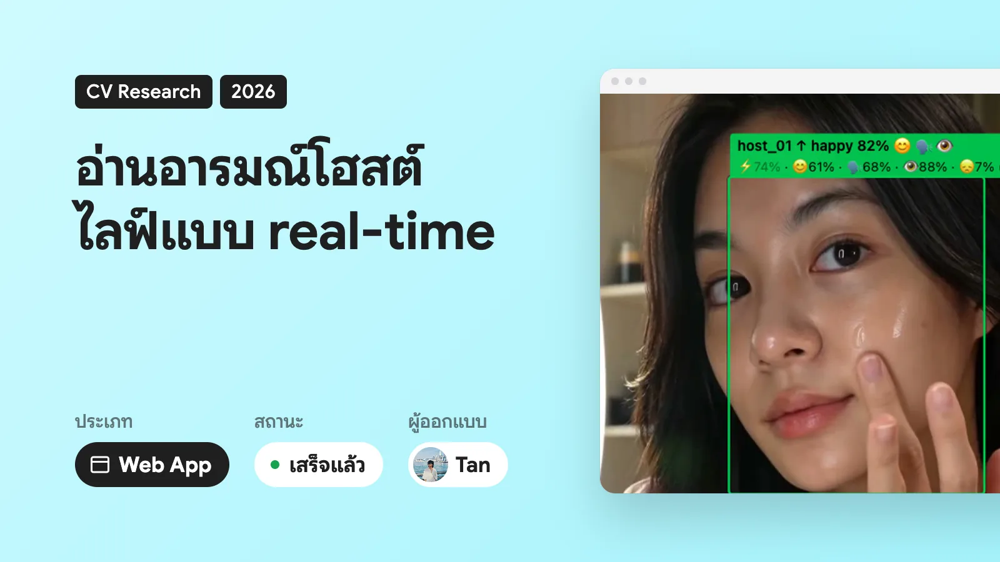
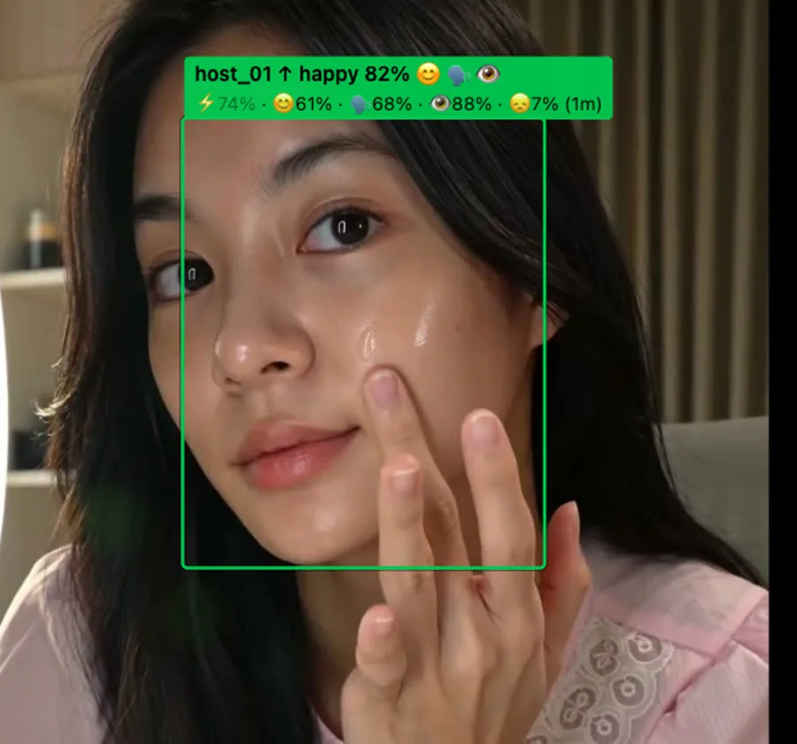
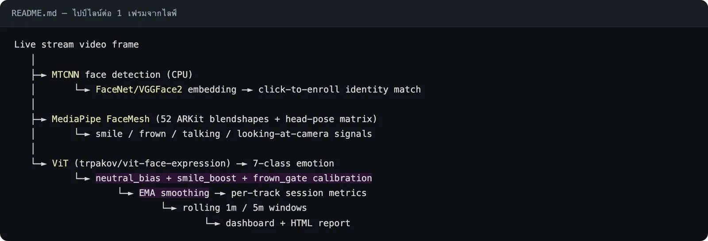
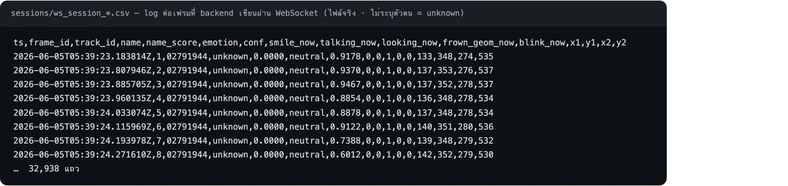
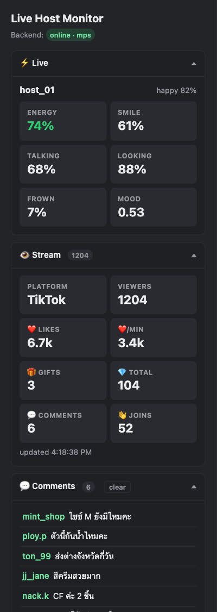
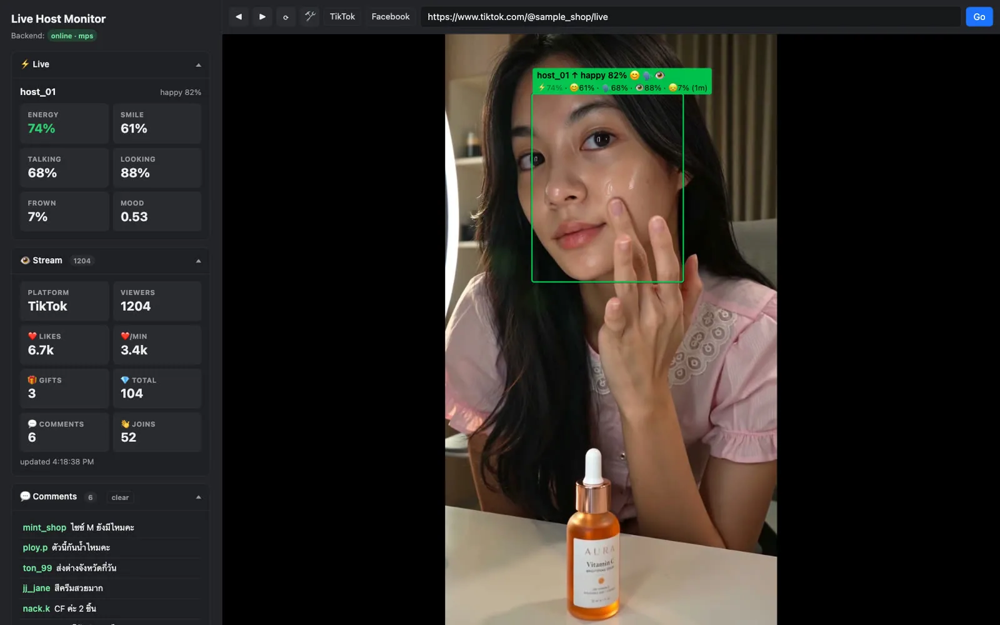
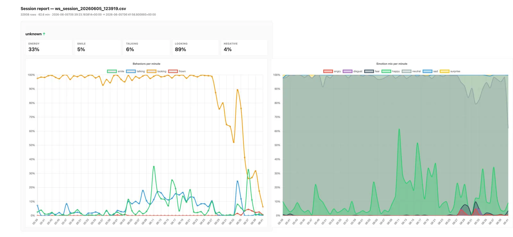
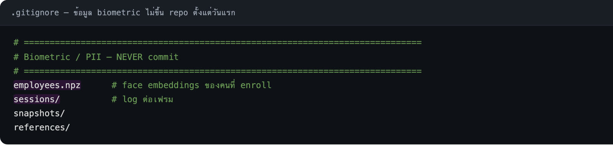
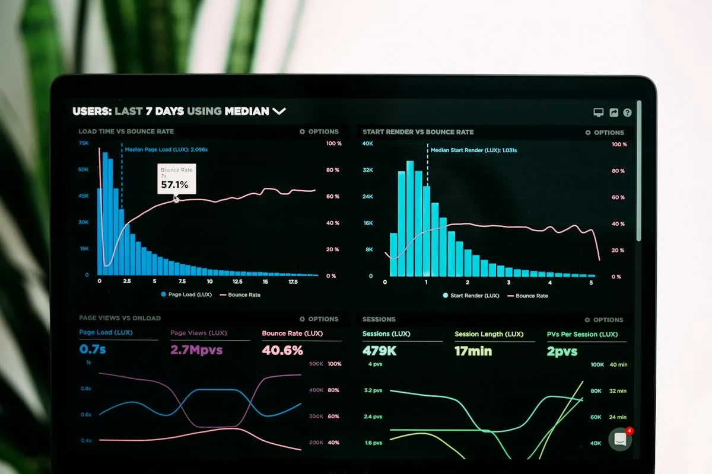

วิเคราะห์โฮสต์ไลฟ์ real-time
งานวิจัย Computer Vision ภายใน ที่เปลี่ยนการนั่งดูไลฟ์ย้อนหลังหลายชั่วโมง ให้เป็น KPI สดที่อ่านได้ต่อวินาที — ประกอบจากโมเดล pretrained ที่ validated แล้ว, ปรับ calibration แก้อคติด้วย multimodal fusion, และออกแบบโดยยึดความเป็นส่วนตัวของคนที่ถูกวัดเป็นหลัก

งานวิจัยภายใน (R&D prototype) ที่ประกอบ 4 โมเดล Computer Vision เข้าเป็นไปป์ไลน์เดียว — จับใบหน้าจากไลฟ์ (แพลตฟอร์มไลฟ์คอมเมิร์ซ) → รู้จักตัวตน → อ่านอารมณ์ 7 คลาส → วัด engagement (ยิ้ม/พูด/มองกล้อง) → สรุปเป็น KPI สดและ session report ให้ทีมดูภาพรวมได้โดยไม่ต้องนั่งดูวิดีโอย้อนหลังเอง
ปัญหาที่เจอ
ไลฟ์คอมเมิร์ซหนึ่งรอบยาวหลายชั่วโมง — จะรู้ได้ยังไงว่าโฮสต์ยัง "มีพลัง" และ engagement ตกตรงไหน โดยไม่ต้องมานั่งดูซ้ำทั้งคลิป?
ทีม ops อยากเข้าใจว่าโฮสต์ไลฟ์แต่ละคน "อิน" กับกล้องแค่ไหน อารมณ์เป็นยังไงตลอด session แต่การให้คนมานั่งดูวิดีโอย้อนหลังหลายชั่วโมงแล้วให้คะแนนเอง มันช้า ไม่ทัน และ subjective — โจทย์คือทำให้ metric พวกนี้ "อ่านได้ต่อวินาที" แบบอัตโนมัติ พร้อมเคารพความเป็นส่วนตัวของคนที่ถูกวัด
ไลฟ์ยาวหลายชั่วโมง ดูย้อนหลังไม่ไหว
หนึ่ง session ไลฟ์ขายของกินเวลาเป็นชั่วโมง — ไม่มีใครมานั่งดูซ้ำทั้งคลิปเพื่อประเมิน engagement ต้องการ metric ต่อวินาทีที่สรุปได้ทันที
"โฮสต์เริ่มตก energy ไหม" ตาคนตัดสินไม่ทัน
อารมณ์ / ความ active ของโฮสต์เปลี่ยนตลอด — การให้คนดูแล้วให้คะแนนเองทั้ง subjective และไม่ต่อเนื่อง อยากได้สัญญาณที่วัดเป็นตัวเลขได้
โมเดล FER สำเร็จรูปมีอคติ
โมเดลอ่านอารมณ์ที่ train บนชุดข้อมูลมาตรฐาน มักอ่าน "หน้านิ่ง / หน้ากำลังพูด" เป็น sad หรือ angry — เอามาใช้ตรงๆ ตัวเลขเพี้ยนทันที
จะรู้ว่าใครอยู่หน้าจอ ต้องเตรียมรูปล่วงหน้า
ระบบ face recognition ทั่วไปต้องมีชุดรูป reference ของแต่ละคนก่อน — ยุ่งยากเวลามีโฮสต์เข้าออกหลายคน อยากลงทะเบียนสดหน้างานได้เลย
จับหน้า + อารมณ์คน = ข้อมูล biometric ละเอียดอ่อน
การประมวลผล face embedding และอารมณ์ของบุคคลเข้าข่าย biometric ตาม PDPA — ถ้าไม่ออกแบบเรื่อง consent / retention / การเก็บข้อมูลตั้งแต่ต้น จะกลายเป็นความเสี่ยง
วิธีแก้ปัญหา
ให้ไปป์ไลน์ CV ทำงานหนักแทน — จับ, รู้จัก, อ่านอารมณ์, วัด engagement ทุกเฟรม แล้วสรุปเป็น KPI ที่คนอ่านเข้าใจใน 3 วินาที

ไปป์ไลน์ real-time จับหน้า → ตัวตน → อารมณ์ → engagement
ทุกเฟรมวิ่งผ่าน MTCNN (หาใบหน้า) → FaceNet (embedding ระบุตัวตน) → ViT (อารมณ์ 7 คลาส) → MediaPipe FaceMesh (ยิ้ม/พูด/มองกล้อง) แบบต่อเนื่อง
แปลงเป็น KPI ที่อ่านง่าย + rolling window
สรุปออกมาเป็น Energy / Smile / Talking / Looking / Mood พร้อมค่าเฉลี่ยเลื่อน 1 นาที / 5 นาที ให้เห็นเทรนด์สดว่ากำลังขึ้นหรือตก
Click-to-enroll — ลงทะเบียนตัวตนสดหน้างาน
คลิกใบหน้าในวิดีโอ พิมพ์ชื่อ กด Enter — ระบบเฉลี่ย embedding เข้าไฟล์ทันที ใช้ได้เลย ไม่ต้องเตรียมชุดรูป reference ล่วงหน้า
Multimodal calibration แก้อคติของโมเดลเดียว
เอาสัญญาณเชิงเรขาคณิตจาก FaceMesh (blendshape ยิ้ม/ขมวดคิ้ว) มา gate ผล ViT — ลดอาการอ่านหน้านิ่งเป็น sad และทำให้ยิ้มจริงชัดขึ้น
Local-only + PDPA-aware ตั้งแต่ออกแบบ
face embedding และ log ทั้งหมดอยู่ในเครื่อง (gitignored) ไม่ส่งออก ออกแบบเผื่อ consent / retention window / จำกัดสิทธิ์เข้าถึงตั้งแต่ต้น
วิธีทำงาน — 4 จังหวะ
ตั้งแต่เฟรมวิดีโอไลฟ์ จนได้ KPI สดบน dashboard

ดึงเฟรมไลฟ์
Electron ฝัง browser จริงเปิดไลฟ์ แคปหน้าจอเป็นเฟรมส่งเข้า backend ผ่าน WebSocket
ตรวจ + รู้จักใบหน้า
MTCNN หาใบหน้า → FaceNet ทำ 512-d embedding → cosine match กับตัวตนที่ลงทะเบียนไว้
อ่านอารมณ์ + engagement
ViT จัดอารมณ์ 7 คลาส + FaceMesh อ่าน blendshape เป็นยิ้ม/พูด/มองกล้อง แล้ว calibrate รวมกัน
สรุป KPI + log
รวมเป็น KPI สดบน sidebar + เขียน CSV ต่อเฟรม → กลายเป็น session report ภายหลัง
Tech Stack & Architecture
Desktop app คุยกับ Python ML backend ในเครื่อง ผ่าน WebSocket — ประมวลผลทุกอย่าง local ไม่มี cloud

FastAPI + WebSocket — สตรีมเฟรมสองทาง latency ต่ำ เหมาะกับ inference ต่อเนื่อง · Electron WebContentsView ฝัง browser จริงเพื่อแคปไลฟ์ + ดึง comment/gift/like ได้ในแอปเดียว · Pretrained models (FaceNet / ViT / MediaPipe) — ต่อของสำเร็จที่ validated แล้วแทนการ train เอง ทำให้ prototype เสร็จเร็วและแม่นกว่า · PyTorch + Apple MPS เร่งงานบน Apple Silicon โดยมี workaround ปักบางโมเดลไว้ที่ CPU เพื่อเลี่ยง bug ของ MPS
สิ่งที่สร้าง — 8 ความสามารถหลัก
ครบ loop ตั้งแต่จับใบหน้า ถึง session report ที่ทีมเปิดดูย้อนหลังได้

Face Detection & Recognition
MTCNN หาใบหน้า + FaceNet/VGGFace2 ทำ 512-d embedding แล้ว cosine match กับตัวตนที่ลงทะเบียนไว้
Emotion Classification
Vision Transformer (fine-tune บน FER+) จัดอารมณ์ 7 คลาส — angry, disgust, fear, happy, neutral, sad, surprise
Engagement Signals
MediaPipe FaceMesh 52 blendshapes + head-pose → smile / talking / looking / frown / blink เชิงเรขาคณิต
Click-to-Enroll
คลิกหน้าในวิดีโอ พิมพ์ชื่อ กด Enter → เฉลี่ย embedding เข้าไฟล์ ใช้งานได้ทันที ไม่ต้องมีรูป reference
Live KPI Sidebar
Energy / Smile / Talking / Looking / Mood พร้อม rolling window 1 นาที / 5 นาที อัปเดตสดบนหน้าแอป
Comment & Gift Scraper
ดึง comment / gift / like / viewer count จากไลฟ์ (ผ่าน live-comment connector) มาแสดงคู่กับ metric อารมณ์
Session Report
รวม CSV ต่อเฟรม → aggregate ราย host รายนาที เป็นกราฟ behavior + emotion mix ด้วย Chart.js
Two-Model Research
เทียบ custom-trained YOLOv8-cls กับ pretrained ViT บนโจทย์เดียวกัน — เพื่อตอบว่า "train เองคุ้มไหม"
หน้าตา Desktop App
เปิดไลฟ์ในหน้าต่างแอป → เห็นวิดีโอ + กล่องใบหน้า + KPI สดในหน้าจอเดียว

Live
Stream
Hack กับปัญหา
6 โจทย์ที่ต้องคิดทางแก้เอง — ML model bias, hardware quirk และ real-time engineering

โมเดลที่ train เอง อ่านหน้านิ่งเป็น "angry"
โมเดล classifier ที่ fine-tune บนชุดข้อมูล public มี class imbalance หนัก (คลาสหนึ่งมีรูปมากกว่าอีกคลาสหลายเท่า) พอเจอ webcam จริงก็ลำเอียงไปคลาสที่ข้อมูลเยอะ — หน้านิ่งโดนอ่านเป็น angry มั่นใจสูง
ViT ยังติดอ่าน "sad" บนหน้าปกติที่กำลังพูด
แม้ pretrained ViT ดีกว่า แต่ก็ยัง sticky กับอารมณ์ลบบนหน้านิ่ง/หน้าพูด ทำให้ mood score เพี้ยนลบเกินจริง
ป้ายอารมณ์กระพริบไปมาระหว่างเฟรม
อ่านอารมณ์ทีละเฟรมอิสระ ทำให้ label เด้งสลับ happy/neutral/sad ตลอด ดูไม่นิ่ง และตัวตนของแต่ละหน้าก็สลับกันเวลาคนขยับ
Face recognition ต้องมีชุดรูปก่อนถึงใช้ได้
ระบบระบุตัวตนปกติต้องเตรียมรูป reference ของแต่ละคนล่วงหน้า — ไม่เวิร์กเวลาโฮสต์เปลี่ยนหน้างานบ่อย
จะแคปไลฟ์ + ดึง comment พร้อมกันยาก
อยากได้ทั้งภาพวิดีโอไลฟ์ (เพื่ออ่านหน้า) และ metadata ไลฟ์ (comment/gift/viewer) ในแอปเดียว โดยไม่พึ่ง API ที่เข้าถึงยาก
Face detector คือคอขวด + เจอ bug ของ MPS
ขั้นตอน detect หน้าช้าสุดในไปป์ไลน์ และตัว detector ก็ชน bug ของ Apple MPS (pooling ต้องการขนาดหารลงตัว) ทำให้ค้าง
Design Decision ที่ตั้งใจเลือก
เพราะเป็นงานที่แตะข้อมูล biometric ของคน ขอบเขต "ไม่ทำ" สำคัญพอๆ กับสิ่งที่ทำ

นี่คือ research prototype ที่จับข้อมูล biometric (face embedding) และ behavioral (อารมณ์/ความสนใจ) จึงออกแบบโดยยึดหลัก PDPA ตั้งแต่ต้น — ข้อมูลทุกอย่างอยู่ในเครื่อง ไม่ส่งออก, metric ที่ได้เป็น "สัญญาณ" ไว้ดูภาพรวม ไม่ใช่คำตัดสินตายตัวของคน, และเอกสารระบุ limitation/bias ของโมเดลไว้ชัด production จริงต้องมี consent + retention window + จำกัดสิทธิ์เข้าถึงก่อนเสมอ
Local-only เท่านั้น
embedding + log อยู่ในเครื่อง (gitignored) ไม่ส่งออกนอก
PDPA-aware
ออกแบบเผื่อ consent · retention window · access control
สัญญาณ ไม่ใช่คำตัดสิน
metric ไว้ดูภาพรวม + ระบุ bias ของโมเดลกำกับ
ยอมรับว่าเป็น prototype
calibration ปรับด้วยมือ ยังไม่ validate บน labelled set
Knowledge Domain ที่แข็งขึ้น
5 พื้นที่ความรู้ที่ระดับเราขยับขึ้นจริงจากการทำโปรเจกต์นี้

ได้ลงมือต่อ 4 โมเดล (detect → recognize → classify → mesh) ให้ทำงานต่อกันภายใน latency budget เดียว รวมถึง IoU tracking ข้ามเฟรมและ EMA smoothing บทเรียน: real-time ML คือเกมของ latency + ความเสถียรของ output ไม่ใช่แค่ตัวเลข accuracy ของโมเดลเดี่ยว
โมเดลที่ train เองได้ top-1 สวยบน test set แต่พังในการใช้จริง เพราะ test set สืบทอด class imbalance มาจาก training — ต้องดู per-class recall, confusion matrix และทดสอบสดถึงเจอ failure mode (neutral → angry) บทเรียน: ตัวเลขเด่นตัวเดียวซ่อนปัญหา distribution ได้เสมอ
เทียบตรงๆ แล้วเห็นว่า CNN เล็กที่ train บนภาพไม่กี่พันสู้ ViT ที่ pretrained บนชุดใหญ่ไม่ได้ บทเรียน: การ train เองคุ้มเฉพาะเมื่อ (ก) label set ไม่มาตรฐาน (ข) มี failure mode ที่วัดได้ในโดเมนจริง หรือ (ค) มี data flywheel ป้อนต่อเนื่อง — ไม่งั้น pretrained คือ default ที่ถูกต้อง
เอา emotion จาก ViT (learned) มาผสมกับ blendshape จาก FaceMesh (geometric) ผ่านกลไก gate/bias/boost เพื่อหักล้างอคติที่โมเดลเดียวมี บทเรียน: เมื่อ single model ลำเอียง การเติมสัญญาณอิสระอีกชนิดมัก robust กว่าการฝืน fine-tune โมเดลเดิม
ออกแบบระบบที่แตะ biometric + emotion โดยคิดเรื่อง consent, retention, local-only storage และการ document bias ของโมเดลตั้งแต่ต้น บทเรียน: กับข้อมูลละเอียดอ่อนของคน ความถูกต้องเชิงจริยธรรม/กฎหมายเป็นข้อกำหนดของระบบ ไม่ใช่ของแถมที่ค่อยมาเติมทีหลัง